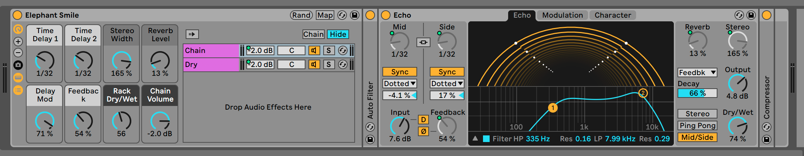
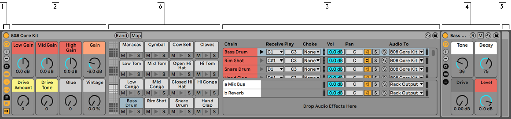
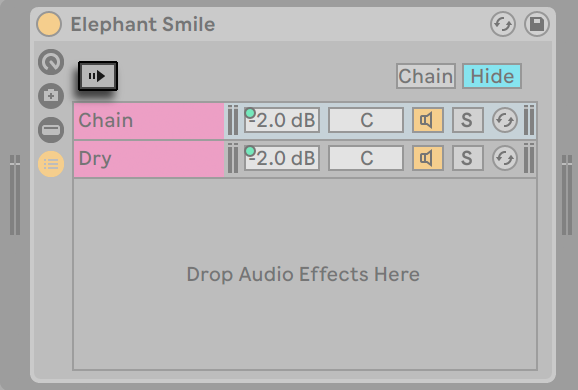
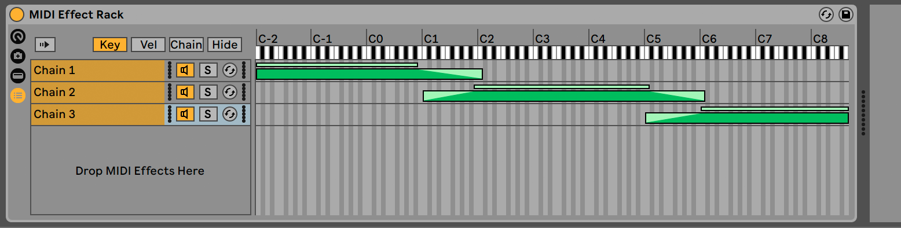
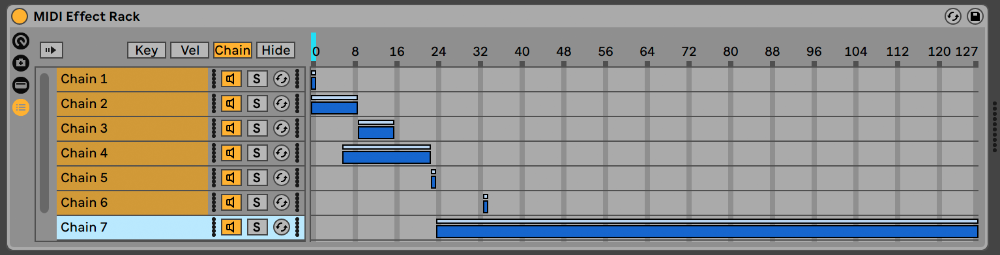
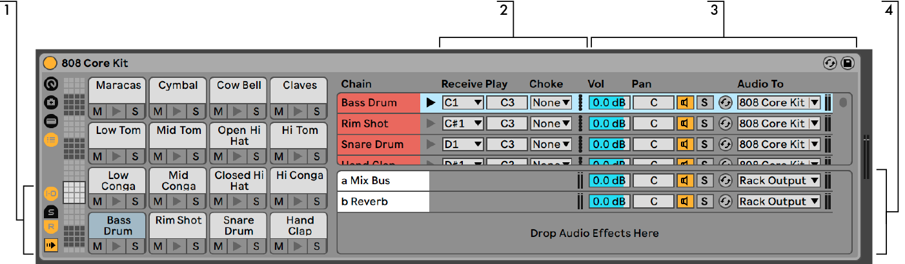
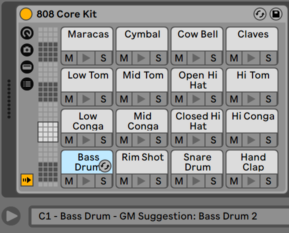
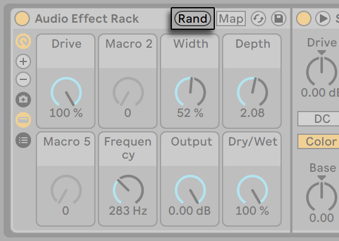
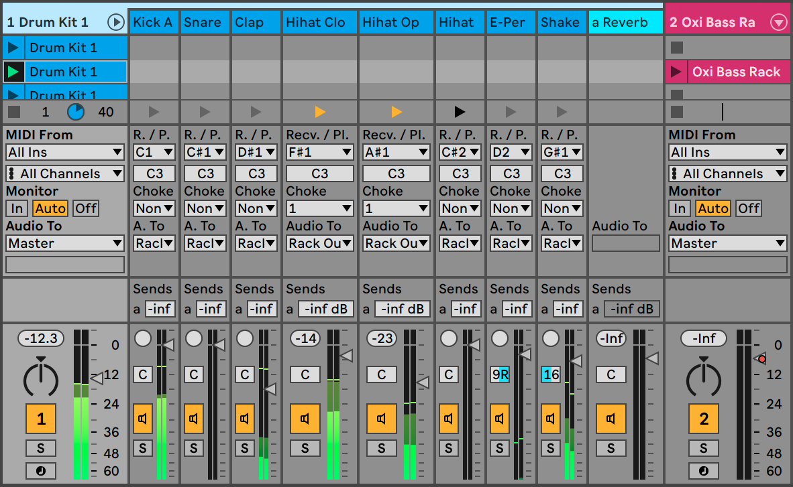

24. Instrument, Drum and Effect Racks

A Rack is a flexible tool for working with effects, plug-ins and instruments in a track’s device chain. Racks can be used to build complex signal processors, dynamic performance instruments, stacked synthesizers and more. Yet they also streamline your device chain by bringing together your most essential controls. While Racks excel at handling multiple devices, they can extend the abilities of even a single device by defining new control relationships between its parameters.
24.1 An Overview of Racks
24.1.1 Signal Flow and Parallel Device Chains
In any of Live’s tracks, devices are connected serially in a device chain, passing their signals from one device to the next, left to right. By default, the Device View displays only a single chain, but there is actually no limit to the number of chains contained within a track.
Racks allow (among other things) additional device chains to be added to any track. When a track has multiple chains, they operate in parallel: In Instrument and Effect Racks, each chain receives the same input signal at the same time, but then processes its signal serially through its own devices. The output of each of the parallel chains is mixed together, producing the Rack’s output.
Drum Racks also allow multiple parallel chains to be used simultaneously, but their chains process input somewhat differently: Rather than receiving the same input signals, each Drum Rack chain receives input from only a single assigned MIDI note.
The entire contents of any Rack can be thought of as a single device. This means that adding a new Rack at any point in a device chain is no different than adding any other device, and Racks can contain any number of other Racks. If more devices are placed after a Rack in a track’s device chain, the Rack’s output is passed on to them, as usual.
24.1.2 Macro Controls

One unique property of Racks are their Macro Controls.
The Macro Controls are a bank of knobs, each capable of addressing any number of parameters from any devices in a Rack. How you use them is up to you — whether it be for convenience, by making an important device parameter more accessible; for defining exotic, multi-parameter morphs of rhythm and timbre; or for constructing a mega-synth, and hiding it away behind a single customized interface. See Using the Macro Controls for a detailed explanation of how to do this.
For the greatest degree of expression, try MIDI-mapping the Macro Controls to an external control surface.
24.2 Creating Racks
Four Rack variants cover the range of Live’s devices: Instrument Racks, Drum Racks, Audio Effect Racks and MIDI Effect Racks. Just as with track types, each kind of Rack has rules regarding the devices it contains:
- MIDI Effect Racks contain only MIDI effects, and can only be placed in MIDI tracks.
- Audio Effect Racks contain only audio effects, and can be placed in audio tracks. They can also be placed in MIDI tracks, as long as they are “downstream“ from an instrument.
- Instrument Racks contain instruments, but can additionally contain both MIDI and audio effects. In this case, all MIDI effects have to be at the beginning of the Instrument Rack’s device chain, followed by an instrument, and then any audio effects.
- Drum Racks are similar to Instrument Racks; they can contain instruments as well as MIDI and audio effects and their devices must be ordered according to the same signal flow rules. Drum Racks can also contain up to six return chains of audio effects, with independent send levels for each chain in the main Rack.
There are different ways to create Racks. A new, empty Rack can be created by dragging a generic Rack preset (“Audio Effect Rack,“ for example) from the browser into a track. Devices can then be dropped directly into the Rack’s Chain List or Devices view, which are introduced in the next section.
If a track already has one or more devices that you would like to group into a Rack, then simply select the title bars of those devices in the Device View, and right-click on one of the title bars to reveal the Group and Group to Drum Rack commands in the context menu. Note that if you repeat this command again on the same device, you will create a Rack within a Rack. You can also group multiple chains within a Rack using the same procedure. Doing this also creates a Rack within a Rack. In the Device View, the contents of Racks are always contained between end brackets: Just as with punctuation or in mathematics, a Rack within a Rack will have a pair of brackets within a pair of brackets.
To ungroup devices, dismantling their Racks, select the Rack’s title bar, and then use the Edit menu or the context menu to access the Ungroup command.
24.3 Looking at Racks


- Racks have distinct views that can be shown or hidden as needed. Therefore, every Rack has a view column on its far left side that holds the corresponding view selectors. The actual view selectors available differ depending on whether an Instrument, Drum or Effect Rack is being used.
- Macro Controls
- Chain List - In Drum Racks, this view can include both drum chains and return chains.
- Devices
- Racks are also identifiable by their round corners, which bracket and enclose their content. When the Devices view is shown, the end bracket visually detaches itself to keep the Rack hierarchy clear.
- Pad View - This is unique to Drum Racks.
To move, copy or delete an entire Rack at once, simply select it by its title bar (as opposed to the title bars of any devices that it contains). When selected, a Rack can also be renamed by using the Edit menu’s Rename command. You can also enter your own info text for a Rack via the Edit Info Text command in the Edit menu or in the Racks’s context menu.
When all of a Rack’s views are hidden, its title bar will fold into the view column, making the entire Rack as slim as possible. This has the same effect as choosing Fold from the context menu or double-clicking on the Rack’s title bar.
If you would like to locate a particular device in a Rack without searching manually through its entire contents, you will appreciate this navigation shortcut: right-click on the Device View selector, and a hierarchical list of all devices in the track’s device chain will appear. Simply select an entry from the list, and Live will select that device and move it into view for you.

24.4 Chain List

As signals enter a Rack, they are first greeted by the Chain List. We will therefore also choose this point for our own introduction.
The Chain List represents the branching point for incoming signals: Each parallel device chain starts here, as an entry in the list. Below the list is a drop area, where new chains can be added by dragging and dropping presets, devices, or even pre-existing chains.
Note: Racks, chains and devices can be freely dragged into and out of other Racks, and even between tracks. Selecting a chain, then dragging and hovering over another Session or Arrangement View track will give that track focus; its Device View will open, allowing you to drop your chain into place.
Since the Device View can show only one device chain at a time, the Chain List also serves as a navigational aid: The list selection determines what will be shown in the adjacent Devices view (when enabled). Try using your computer keyboard’s up and down arrow keys to change the selection in the Chain List, and you’ll find that you can quickly flip through the contents of a Rack.
The Chain List also supports multi-selection of chains, for convenient copying, organizing and regrouping. In this case, the Devices view will indicate how many chains are currently selected.
Each chain has its own Chain Activator, as well as Solo and Hot-Swap buttons. Chains in Instrument, Drum and Audio Effect Racks also have their own volume and pan sliders, and Drum Rack chains have additional send level and MIDI assignment controls. Like Live Clips, entire chains can be saved and recalled as presets in the browser. You can give a chain a descriptive name by selecting it, then choosing the Edit menu’s Rename command. You can also enter your own info text for a chain via the Edit Info Text command in the Edit menu or in the chain’s context menu. The context menu also contains a color palette where you can choose a custom chain color.
24.4.1 Auto Select

When the Auto Select switch is activated, every chain that is currently processing signals becomes selected in the Chain List. In Drum Racks, this feature will select a chain if it receives its assigned MIDI input note. In Instrument and Effect Racks, Auto Select works in conjunction with zones, which are discussed next, and is quite helpful when troubleshooting complex configurations.
24.5 Zones
Zones are sets of data filters that reside at the input of every chain in an Instrument or Effect Rack. Together, they determine the range of values that can pass through to the device chain. By default, zones behave transparently, never requiring your attention. They can be reconfigured, however, to form sophisticated control setups. The three types of zones, whose editors are toggled with the buttons above the Chain List, are Key, Velocity, and Chain Select. The adjacent Hide button whisks them out of sight.
Note: Audio Effect Racks do not have key or velocity zones, since these two zone types filter MIDI data only. Likewise, Drum Racks have no zones at all; they filter MIDI notes based on choosers in their chain lists.
Zones contain a lower, main section, used for resizing and moving the zone itself, and a narrow upper section that defines fade ranges. Resizing of either section is done by clicking and dragging on its right or left edges, while moving is accomplished by clicking and dragging a zone from anywhere except its edges.
24.5.1 Signal Flow through Zones
To understand how zones work, let’s examine the signal flow in a MIDI Effect Rack. Our MIDI Effect Rack resides in the device chain of a MIDI track, and therefore processes MIDI signals. We will assume that it contains four parallel device chains, each containing one MIDI effect.
- All MIDI data in the track is passed to its device chain, and therefore into the input of the MIDI Effect Rack.
- Our MIDI Effect Rack has four device chains, all of which receive the same MIDI data at the same time.
- Before any MIDI data can enter a device chain, it must be able to pass through every zone in that chain. Every chain in a MIDI Effect Rack has three zones: a key zone, a velocity zone and a chain select zone.
- An incoming MIDI note gets compared to a chain’s key zone. If the MIDI note lies within the key zone, it is passed to the next zone for comparison; if it does not, then we already know that the note will not be passed to that chain’s devices.
- The same comparisons are made for the chain’s velocity and chain select zones. If a note also lies within both of these zones, then it is passed to the input of the first device in that chain.
- The output of all parallel chains is mixed together to produce the MIDI Effect Rack’s final output. If there happened to be another device following after the Rack in the track’s device chain, it would now receive the Rack’s output for processing.
24.5.2 Key Zones

When the Key button is selected, the Key Zone Editor appears to the right of the Chain List, illustrating how each chain maps to the full MIDI note range (nearly 11 octaves). Chains will only respond to MIDI notes that lie within their key zone. The zones of individual chains may occupy any number of keys, allowing for flexible “keyboard split“ setups.
Key zone fade ranges attenuate the velocities of notes entering a chain.
24.5.3 Velocity Zones

Each chain in an Instrument Rack or MIDI Effect Rack also has a velocity zone, specifying the range of MIDI Note On velocities that it will respond to.
The Velocity Zone Editor, when displayed, replaces the Key Zone Editor to the right of the Chain List. MIDI Note On velocity is measured on a scale of 1-127, and this value range spans the top of the editor. Otherwise, the functionality here is identical to that of the Key Zone Editor.
Velocity zone fade ranges attenuate the velocities of notes entering a chain.
24.5.4 Chain Select Zones

Activating the Chain button in an Instrument or Effect Rack displays the Chain Select Editor. These Racks have chain select zones, which allow you to filter chains spontaneously via a single parameter. The editor has a scale of 0-127, similar to the Velocity Zone Editor. Above the value scale, however, you will find a draggable indicator known as the Chain selector.
The chain select zone is a data filter just like the other zones; although all chains in a Rack receive input signals, only those with chain select zones that overlap the current value of the Chain selector can be addressed and thereby produce output.
By default, the chain select zones of Instrument and MIDI Effect Racks filter only notes, ignoring all other incoming MIDI events (such as MIDI CCs). To filter all MIDI events, enable the Chain Selector Filters MIDI Ctrl option, available in the context menu of a Rack’s Chain Select Ruler.
In MIDI Effect Racks, fade ranges attenuate the velocities of notes entering a chain. In Instrument Racks and Audio Effect Racks, which both output audio signals, fade ranges attenuate the volume level at each chain’s output. So what happens, then, if the Chain selector is moved outside of the chain select zone where a sound is currently playing? If the zone ends in a fade range, the chain’s output volume is attenuated to zero while the Chain selector is outside of the zone. If the zone had no fade range, the output volume is not attenuated, allowing the chain’s effects (like long reverb tails or delays) to fade out according to their own settings.
Let’s consider how we can make use of chain select zones in a performance situation:
24.5.4.1 Making Preset Banks Using Chain Select

Unlike the other zone types, the default length of a chain select zone is 1, and the default value is 0. From this setup, we can quickly create “preset banks“ using the Chain Select Editor.
Again, we will use a Rack with four chains as our starting point. Each of the four chains contain different effects that we would like to be able to switch between. To make this a “hands-on“ experience, we have MIDI-mapped the Chain selector to an encoder on an external control surface.
Let’s move the chain select zones of the second and third chains so that each of our zones is occupying its own adjacent value: The first chain’s zone has a value of 0, the second chain’s zone has a value of 1, the third has a value of 2, and the fourth has a value of 3.
Since each of our chain select zones has a unique value, with no two zones overlapping, we now have a situation where only one chain at a time can ever be equal to the Chain selector value (shown at the top of the editor). Therefore, by moving the Chain selector, we determine which chain can process signals. With our MIDI encoder at hand, we can now flip effortlessly between instrument or effect setups.
24.5.4.2 Crossfading Preset Banks Using Fade Ranges

Taking the previous example one step further, we can tweak our chain select zones to produce a smooth transition between our “presets.“ To accomplish this, we will make use of our zones’ fade ranges.
To create some room for fading, let’s extend the length of our zones a bit. Setting the zones as shown maintains four exclusive values for our presets, so that each still has one point where neither of the others are heard. We crossfade between the presets over eight steps. If this is too rough a transition for your material, simply reposition the zones to maximize the fade ranges.
24.6 Drum Racks
We’ve already talked a bit about Drum Racks, and most of their features are the same as those found in Instrument and Effect Racks. But Drum Racks have a slightly different layout, some unique controls and special behavior that is optimized for creating drum kits.

- In addition to the standard selectors found on all Racks, Drum Racks have four additional controls in the view column. From top to bottom, these are toggles for the Input/Output, Send, and Return sections, and the Auto Select button.
- Input/Output Section - The Receive chooser sets the incoming MIDI note to which the drum chain will respond. The list shows note names, MIDI note numbers and standard GM drum equivalents. The Play slider sets the outgoing MIDI note that will be sent to the devices in the chain. The Choke chooser allows you to set a chain to one of sixteen choke groups. Any chains that are in the same choke group will silence the others when triggered. This is useful for choking open hihats by triggering closed ones, for example. If “All Notes“ is selected in the Receive chooser, the Play and Choke choosers are disabled — in this case, the chain simply passes the note that it receives to its devices. The small Preview button to the left of these choosers fires a note into the chain, making it easy to check your mappings away from a MIDI controller.
- Mixer Section - In addition to the mixer and Hot-Swap controls found in other Rack types, Drum Racks also have send sliders. These sliders allow you to set the amount of post-fader signal sent from each drum chain to any of the available return chains. Note that send controls are not available until return chains have been created.
- Return Chains - A Drum Rack’s return chains appear in a separate section at the bottom of the chain list. Up to six chains of audio effects can be added here, which are fed by send sliders in each of the drum chains above.
The Audio To chooser in the mixer for return chains allows you to route a return chain’s output to either the main output of the Rack or directly to the return tracks of the Set.
24.6.1 Pad View

The Pad View is unique to Drum Racks and offers an easy way to map and manipulate samples and devices. Each pad represents one of the 128 available MIDI notes. The pad overview to the left shifts the set of visible pads up or down in groups of 16, either by dragging the view selector to a new area or by using your computer keyboard’s up and down arrow keys. Use the Alt (Win) / Cmd (Mac) modifier to shift the view by single rows instead.
Almost any object from Live’s browser — samples, effects, instruments and presets — can be dragged onto a pad, mapping automatically to the pad’s note and creating or reconfiguring internal chains and devices as necessary. Dropping a sample onto an empty pad, for example, creates a new chain containing a Simpler, with the dropped sample ready to play from the pad’s note. If you then drag an audio effect to the same pad, it is placed downstream from the Simpler in the same chain. To replace the Simpler, simply drop another sample onto the same pad — any downstream audio effects or upstream MIDI effects will be left intact and only the Simpler and sample will be replaced.
In addition to dragging objects from the browser, pads can also be filled quickly via Hot-Swap. If you’re in Hot-Swap mode, pressing the D key will toggle the Hot-Swap target between the Drum Rack itself and the last selected pad.
If a multi-selection of samples is dropped onto a pad, new Simplers and chains will be mapped upwards chromatically from this pad, replacing any other samples that may have already been assigned to the pads in question (but, as before, leaving any effects devices alone). Alt (Win) / Cmd (Mac)-dragging a multi-selection layers all of the samples to a single pad, by creating a nested Instrument Rack.
Dragging a pad to another pad swaps the note mapping between the pads. This means that any MIDI clips triggering the affected notes will now play the “wrong“ sounds — although this might be exactly what you want. Alt (Win) / Cmd (Mac)-dragging one pad to another will layer any chains from both pads in a nested Instrument Rack.
You can always change your mappings from within the chain list as well, by adjusting the Receive choosers. The Pad View will update automatically to reflect your changes. If you set the same Receive note for multiple chains, that note’s pad will trigger them all.
If you’re working with lots of nested Racks, the inner structure can quickly become complicated. Pad View can make it much easier to work by letting you focus on only the top level: the notes and sounds. It’s important to remember that a pad represents a note, rather than a chain. More specifically, it represents all chains, no matter how deep in the Rack, that are able to receive that pad’s note. What you can control with each pad is related to how many chains it represents:
- An empty pad shows only the note it will trigger. When you mouse over it, the Status Bar will display this note, as well as the suggested GM instrument.
- A pad that triggers only one chain shows the name of the chain. In this case, the pad serves as a handy front-end for many controls that are normally accessed in the chain list, such as mute, solo, preview and Hot-Swap. You can also rename and delete the chain via the pad.
- A pad that triggers multiple chains shows “Multi“ as its name, and its mute, solo and preview buttons will affect all of its chains. If you mute and solo chains individually within the chain list, the pad’s icons reflect this mixed state. Hot-Swap and renaming are disabled for a Multi pad, but you can delete all of its chains at once.
Although Pad View is designed for easy editing and sound design, it also excels as a performance interface, particularly when triggered by a hardware control surface with pads. If your pad controller is one of Live’s natively supported control surfaces, simply select it as a control surface in the Link, Tempo & MIDI tab of Live’s Settings. From then on, as long as you have a Drum Rack on a track that’s receiving MIDI, your pad controller will trigger the pads that are visible on your screen. If you scroll the pad overview to show a different set of pads, your controller will update automatically.
24.7 Using the Macro Controls
It is possible to use up to 16 Macro Controls in a Rack. When creating a new Rack, eight Macro Control knobs are shown by default. You can use the  and
and  view selector buttons to increase or decrease the number of visible Macro Controls. Note that the state of shown and hidden Macro Controls is saved in the Live Set.
view selector buttons to increase or decrease the number of visible Macro Controls. Note that the state of shown and hidden Macro Controls is saved in the Live Set.

24.7.1 Map Mode

With the potential for developing complex device chains, Macro Controls keep things manageable by taking over the most essential parameters of a Rack (as determined by you, of course). Once you have set up your ideal mapping, the rest of the Rack can be hidden away.
The Macro Control view’s dedicated Map button opens the door to this behavior. Enabling Macro Map Mode causes three things to happen:
- All mappable parameters from a Rack’s devices will appear with a colored overlay;
- Map buttons will appear beneath each Macro Control dial;
- The Mapping Browser (see ‘The Mapping Browser’) will open.
The following steps will get you started mapping:
- Enable Macro Map Mode by clicking the Map mode button;
- Select a device parameter for mapping by clicking it once;
- Map the parameter by clicking on any Macro Control’s Map button. The details will be added to the Mapping Browser. By default, the Macro Control will take its name and units from the device parameter it is controlling.
- Refine the value range if desired using the Min/Max sliders in the Mapping Browser. Inverted mappings can be created by setting the Min slider’s value greater than the Max slider’s value. The current values can also be inverted by right-clicking on the entry in the Mapping Browser and selecting Invert Range.
- Select another device parameter if you’d like to create more mappings, or click on the Map mode button once more to exit Macro Map Mode.
Note that once assigned to a Macro Control, a device parameter will appear disabled, since it hands over all control to the Macro Control (although it can still be modulated externally, via clip envelopes.
You can edit or delete your assignments at any time using the Mapping Browser (which only appears when Map Mode is enabled).
If more than one parameter is assigned to a single Macro Control, the name of the control will revert to its generic name (e.g., Macro 3). The Marco Control’s units will also change to a 0 to 127 scale, except when all parameters possess both the same unit type and the same unit range.
Macro Controls can be given custom names, colors and info text entries via the corresponding commands in the Edit menu or the context menu.
24.7.2 Randomizing Macro Controls
If you want to add an element of surprise or find some inspiration in your Set, randomizing Macro Controls can be a useful tool. You can randomize the values of all mapped Macro Controls in a Rack by pressing the Rand button in that Rack’s title bar.

Depending on your material, you might only want to randomize some parameters, while leaving other controls unchanged. To exclude a mapped Macro Control from randomization, enable the Exclude Macro from Randomization option in the context menu. Note that Macro Controls assigned to Volume parameters in Instrument Rack presets are excluded from randomization by default.
24.7.3 Macro Control Variations

You can store different states of Macro Controls as individual presets (or “variations”). This is useful when, for example, you want to capture the state of a Rack as a “snapshot” during a sound design session, or audition different settings of a mapped Macro Control in an Audio Effect Rack made for mixing. You can also use these variations or create builds and drops, or make instant jumps between different Macro Control settings while recording or performing.
Clicking the Show/Hide Macro Variations view selector button opens a view where you can store, manage and launch Macro Control variations.

Pressing the New button stores the current state of a Rack’s Macro Controls as a new variation. By default, each stored variation will be named sequentially as “Variation 1”, “Variation 2”, etc. Selected Macro Control variations can be renamed, duplicated, or deleted via commands in the Edit menu or the context menu.
A Macro Control variation can be launched in its stored state via the Launch Macro Variation button to the right, or overwritten via the “Overwrite Macro Variation” button to the left. Note that you can exclude a Macro Control from changing when a different Macro Control variation is launched, by using the Exclude Macro From Variations command in the context menu. Disabling the context menu entry will re-enable changes to that control.
24.8 Mixing With Racks
Any Instrument or Drum Rack that contains more than one chain can be viewed and mixed alongside the tracks in the Session View’s mixer. A track that contains these Racks will have a button in its title bar, which will fold the Rack’s mixer in or out. Likewise, any nested chains within the Rack will also have this button. This makes it easy to get an overview of your Rack’s hierarchy — or hide it when you just want to work on your mix.

Chains in the Session View mixer look similar to tracks, but they have no clip slots. Their mixing and routing controls mirror those found in the Rack’s chain list, so any changes made to these controls in either area will be reflected in the other immediately. Likewise, many chain operations such as reordering, renaming and regrouping can be performed from either the mixer or the chain list. Clicking in a chain’s mixer title bar shows only that chain’s devices in the Device View.
As with tracks, when chains are multiselected in the Session View mixer, adjusting a mixer parameter for one of the chains will adjust the same parameter in the other selected chains. Note that this behavior only applies to parameters adjusted via the Session mixer and not when adjusting the same parameters in the Rack’s chain list.
24.8.1 Extracting Chains
All chains can be dragged from their parent Racks and placed into other tracks or Racks, either from the chain list or from the Session View mixer. A Drum Rack’s return chains can also be extracted, and will create new return tracks if dragged to the mixer. Drum chains have an additional feature: when dragged from the mixer to a new track, they take their MIDI notes with them. For example, if you are working on a MIDI drum loop within a single track and decide that you would like to move just the snare onto its own track, simply select the snare chain’s title bar in the mixer and drag it to the mixer’s drop area. This creates a new track with the full contents of the snare chain: both its devices and its MIDI data. If you would like to extract only the devices, drag from the chain list instead of from the mixer.